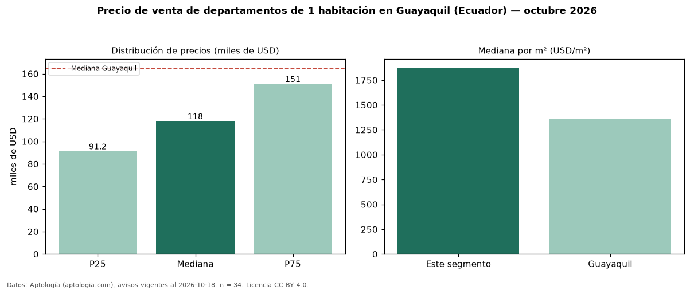

Precio de venta de departamentos de 1 habitación en Guayaquil (Ecuador) — octubre 2026
USD 118.000 es el precio mediano de departamentos de 1 habitación en venta en Guayaquil (Ecuador) (n = 34 avisos). Eso es 28 % por debajo de la mediana de todos los departamentos en venta de Guayaquil (USD 165.000). Por metro cuadrado, la mediana es USD 1.870/m² (n = 31 avisos con área). Con el precio por m² de alquiler del mismo segmento (USD 9,50/m² al mes), la rentabilidad bruta implícita es 6,1 % anual (aproximación con medianas de ofertas distintas). El área mediana anunciada es 62 m². La mitad central de los avisos va de USD 91.250 a USD 151.000 (razón 1,7), una dispersión moderada. Datos: Aptología (aptologia.com), CC BY 4.0 — https://www.aptologia.com/ec/venta/guayaquil. Archivos: PDF, CSV con las cifras y gráfica PNG.

| Avisos únicos | 34 |
|---|---|
| Percentil 25 | COP 91.250 |
| Mediana | COP 118.000 |
| Percentil 75 | COP 151.000 |
| Mediana por m² | COP 1.870 |
Fuente: avisos vigentes de portales inmobiliarios recopilados por Aptología, deduplicados (mínimo 30 avisos únicos por celda). Precios pedidos, no cerrados. Fecha: 2026-10-18.